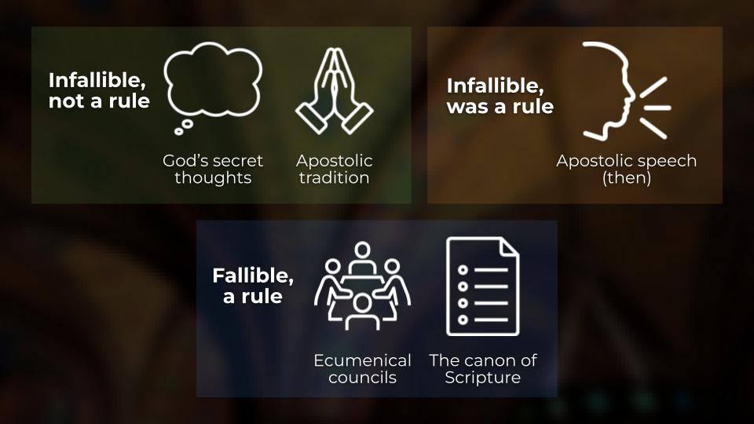

Do We Have Infallible Oral Tradition?
Is it possible that some of the apostles' oral teaching has been preserved in tradition, liturgy, or writings outside the New Testament? And if so, does this count as an infallible rule of faith apart from Scripture? This question is especially relevant to the Protestant view sola scriptura, which states that Scripture is the only infallible rule of Christian faith and doctrine.[1]
Some non-Protestants have proposed that infallible apostolic teaching was preserved outside the New Testament. In the fourth-century AD, specific examples of preserved apostolic traditions were listed by St. Basil of CaesareaAlso called Basil the Great. He was the Bishop of Caesarea in Cappadocia from 370 to 379. He supported the Nicene Creed and opposed Arianism and Apollinarianism. including facing the East during prayer, standing for prayer on Sunday, making the sign of the cross, and the threefold immersion during baptism.[2] The Apostles' Creed, the canon of Scripture, and practices in the liturgy have also been suggested.[3] Are these examples of infallible oral teaching outside the New Testament? I think that this question is almost impossible to answer with a high degree of confidence. Whether these teachings were truly preserved and carried down from the apostles is not verifiable.
Now, if there was apostolic teaching preserved in tradition, would it invalidate sola scriptura. I think not. The claim of sola scriptura is not merely that there is nothing infallible outside of Scripture; it is that there is no infallible 'rule of faith' outside of Scripture.[4] In this article, I will defend the idea that apostolic tradition is consistent with sola scriptura because it does not qualify as a 'rule of faith,' and therefore does not falsify the statement that Scripture is the only 'rule of faith.' I will also do some conceptual analysis on various authorities to help get an understanding of these terms and answer the question regarding whether sola scriptura was true during the time of the apostles. But let's start with some definitions: 'infallibility' and 'rule.'
What Is Infallibility?
The basic meaning of the term infallible is that of being "incapable of error." In a theological context, it takes on the idea that God is the being responsible for why an entity would have no error.[5] Scripture is considered without error not because the authors were lucky or were themselves omniscient. Scripture is without error because of the guidance of the Holy Spirit. As Peter says "for no prophecy was ever made by an act of human will, but men moved by the Holy Spirit spoke from God" (2Pe 1:21).
This is of course not to say that interpretation of Scripture is infallible. Christians disagree about Scripture not because it can be wrong, but because we can be.
It's important to clarify that merely not having errors is not enough for something to be infallible. Theologians would not consider a phonebook infallible, even if it happened to contain no errors. Remember that theologically speaking, God is the responsible agent for why the intended meaning for the text is without error, so we say the text could not err. As I will touch on later, Protestants argue that the formation of the canon was fallible, however they still maintain that it was correct.[6] Again, faithful men can arrive at correct answers by properly applying the principles of reasoning that God has created, even if they are not inspired in the same way that the biblical authors were.
What Is A Rule Of Faith?
Part of the meaning of the term 'rule' includes authority. This means that it has to be an entity with some power or jurisdiction to make valid pronouncements or compel actions. If an authority is binding, then in some sense you must obey it. Authorities may be infallible, such as Scripture, but do not necessarily have to be.
Another aspect of something being a rule is that it must be publicly accessible in a stable and identifiable form such that it can function as an authority. What has been lost and obscured over time cannot be a rule for the church today.[7] Nothing within the definition of infallible itself means that it must be accessible, however this does seem to be implicit in the term rule.[8] A rule for the whole church must be available to the whole church.
Think about a carpenter's measuring tape: the utility of such a tool depends on the ability of the carpenter to pick it up, examine its markings, and verify some aspect of the length of wood. If the measuring tape is hidden from the carpenter, or its markings are blurred and impossible to use, it cannot function as a rule. Similarly, a rule of faith must be accessible and identifiable so that it can be used to evaluate disputes within the church.
Is Scripture a rule? Does it qualify as being "known" or "verifiable?" Yes. While we do not have the original writings of the New Testament, the vast manuscript tradition gives us over 99% confidence in reconstructing the original text.[9] Oral tradition is not accessible or verifiable in any comparable sense.
For example, it is claimed by non-Protestant traditions that standing while praying on Sunday and the season between Easter and Pentecost was apostolic practice. This was certainly widespread and attested by many in the early church. Tertullian2nd and 3rd century Christian writer at Carthage even considered it "unlawful" to pray while kneeling on Sunday.[10] The practice was mandated by the canons of the Council of Nicaea in A.D. 325.[11] Whether this was a temporary custom or a binding apostolic practice is unknowable to us. This alleged apostolic tradition is not accessible in a way that allows for verification. This is quite different from cases involving two competing interpretations of Scripture. In such a case as the Protestant and non-Protestant disputes over the meaning of justification in Paul and James, we can examine the original source and evaluate interpretations. This cannot be done with apostolic tradition.
Another example is contradictory claims regarding the date of Easter. Polycrates and the churches of Asia Minor insisted on the fourteenth day of the Jewish month of NisanFirst month of spring in the Hebrew calendar. It is considered "the month of redemption," the anniversary of the exodus from Egypt.", as being unaltered tradition handed down by the Apostle John. Significantly, the fourteenth day of Nisan could be a Sunday, or it could not. In contrast, the Bishop of Rome, Bishop Victor, insisted that the celebration must take place on a Sunday. This was claimed to be an unaltered tradition handed down from Peter and Paul. Both sides of the debate levied apostolic tradition to condemn one another.[12]
Was there apostolic tradition concerning the date of Easter? Was there only one, or multiple? Are any of them infallible? Do we have this tradition and can we verify it? The answer to all of these questions are unverifiable. This is the inherent instability and inaccessibility of oral tradition. If we do not have access to the infallible teaching, the infallible teaching cannot be a rule.
Part of the Protestant concern with oral tradition is that it is an inherently unstable form of communication. Oral traditions are highly susceptible to the failures of human memory. If we look at how claims of unwritten tradition functioned in the early church, it is often a polemical tool used by both sides to support local customs. Because the traditions are unwritten and therefore not fixed, there can be no verification for these claims. If it cannot be verified, how can apostolic tradition function as a rule? William GoodeEnglish cleric and leader of the evangelicals of the Church of England asserts:
"... there is no sufficient evidence of the divine origin of anything but Scripture; and that "tradition" is on many accounts not sufficiently trustworthy to be received as a divine informant." William Goode[13]
Evaluating Various Authorities
Not everything that is infallible is a rule of faith, and not everything that is a rule of faith is infallible. Sola scriptura is the question of whether Scripture is the only entity which is both infallible and a rule of faith.
We've already spent time on the concept of apostolic tradition, but to get a broader understanding of how infallibility relates to rules, I will consider several authorities: the secret thoughts of God, apostolic tradition, the apostolic speech of the first century AD, ecumenical councils, and the canon of Scripture.
These examples function as test cases to determine whether the distinction between 'infallibility' and 'rule of faith' is coherent. A definition is most meaningful if it can helpfully classify disputed cases. If the Protestant distinction between authorities and rules of faith truly makes sense, we should be able to do some conceptual verification on various items. I will not exhaustively defend the arguments for why Protestants believe what they do about these authorities, rather this section is more for conceptual understanding.

Category 1: Infallible, but not a rule.
A useful comparison to apostolic tradition as being "infallible, but not a rule" is the secret thoughts of God. All Christians would agree that God's thoughts are incapable of error, and therefore infallible. However, since we do not have access to God's secret thoughts they are not a publicly accessible rule. God's thoughts are certainly not a perfect comparison to apostolic tradition, since the latter is certainly somewhat available or known, while the former is not at all. However, I think this is an interesting thought to test this distinction between being a rule and being infallible. God's secret thoughts show that not all things which are infallible are rules.
Apostolic tradition is similar to this. As previously mentioned however, apostolic tradition is unverifiable for two reasons. First, we cannot verify whether apostolic traditions such as the date of Easter were truly apostolic. Second, we cannot verify whether, if it was apostolic, it was infallible. Not all the speech of the apostles need be taken as infallible. It is conceivable that some of their speeches were instituting customs that they thought were right for the time, not something intended to be universally binding.
Is there infallible oral tradition? As previously mentioned, I think this is certainly possible. The important distinction here is that non-Scriptural apostolic tradition is unverifiable. It is this condition of 'verifiability' or 'accessibility' that is necessary for something to be considered a "rule of faith," in the historic Protestant sense. Even if it is infallible, it is not verifiable, or as William Goode said, "not sufficiently trustworthy to be received as a divine informant."
Category 2: Infallible, but previously a rule
The apostles' speech in the first century stands in its own category. This was certainly accessible and verifiable to the early church, at least to the extent that one could go to the apostles and ask them. This means that this infallible rule was temporary, and ended with the death of the apostles.
Protestants can certainly maintain that some of the oral teachings of the prophets and apostles were infallible and carried divine authority. The oral teaching of the apostles (lit. "sent ones") was certainly an infallible rule for the first century church. Paul stated his own preaching in Galatia was communicated by direct "revelation of Jesus Christ" (Gal 1:11-12). This certainly suggests that sola scriptura did not apply to believers during the eras in which there were prophets and apostles commissioned with divine revelation. For these Christians, they did have apostolic tradition as a 'rule of faith.' Sola scriptura is a principle for the post-apostolic church. It is not quite right to say sola scriptura was false "during the life of the apostles," for the principle is a post-apostolic principle. We can instead say that sola scriptura did not apply.
Category 3: Not infallible, but a rule
Ecumenical ("plenary," "universal") councils represented the beliefs and pronunciations from bishops and church leaders from around the world. These councils are an authority of Christian faith and doctrine, however from a Protestant perspective they are not infallible. Augustine of HippoChristian theologian and philosopher from Roman Africa who wrote The City of God and Confessions. He is viewed as the most important Church Father for Western Christianity for example, argued that ecumenical councils could be corrected by those that follow them:
"and that the Councils themselves, which are held in the several districts and provinces, must yield, beyond all possibility of doubt, to the authority of plenary Councils which are formed for the whole Christian world; and that even of the plenary Councils, the earlier are often corrected by those which follow them, when, by some actual experiment, things are brought to light which were before concealed..." Augustine of Hippo[14]
The canon of Scripture is likewise an authority for the church, however it is not infallible. A full defense of how someone can consistently hold a fallible list of infallible scriptures is beyond the scope of this article. However, there is nothing internally inconsistent about this perspective. The canon is a fallible authority. As mentioned in the section on infallibility, something need not be "incapable of error" to be true. Faithful men of the past, I believe, were right about the canon. But while this formation process was indeed correct, it was not infallible.
Notes & References
- https://blog.slatelee.com/articles/what-is-sola-scriptura.html
- "We pray standing, on the first day of the week, but we do not all know the reason." Philip Schaff, Basil: Letters and Select Works, Chapter XXVIII, 66. "Basil points out to them that Christians believe many things that are not found in the Bible, including the sign of the cross and the baptismal promise to renounce Satan." The Case for Catholicism, Trent Horn.
- "I say this was done in the apostles' days, because history bears witness to the fact, calling it the Creed, the Apostles' Creed, the treasure and legacy of faith which the apostles had left to their converts, and which was to be preserved in the Church to the end." Cardinal John Henry Newman as quoted in Divine Rule of Faith and Practice, William Goode, p. 61. "Finally, perhaps the most obvious example of an authoritative, nonbiblical tradition that even Protestants recognize would be the canon of Scripture itself." The Case for Catholicism, Trent Horn. "...it was by the apostolic Tradition that the Church discerned which writings are to be included in the list of the sacred books" (CCC 120). "The general customs of the church, although they are not written in the New or the Old Testament are to be observed and not abandoned... because, although they were not written in the Canon, they were handed down by Christ or by the Apostles" Guido Terrini as quoted in Origins of Papal Infallibility, Brian Tierney, p. 256.
- "...Holy Scripture is the only infallible rule for the church's faith and practice (sola Scriptura)." What It Means To Be Protestant, Gavin Ortlund.
- "Infallible means being incapable of error." What It Means To Be Protestant, Gavin Ortlund.
- "Infallibility is not necessary for canonization since the church's responsibility is not constituting Scripture but simply recognizing it. Such recognition is not itself the action of an infallible agent." What It Means To Be Protestant, Gavin Ortlund.
- "This consent, if it could be had, is not so manifest and obvious as a rule of faith ought necessarily to be, which by the confession of all must be clear, evident, and easy to be applied. This Duvall assigns for 'an essential condition of a rule of faith,' and acknowledgeth, that 'if a rule obscurely proposeth the mysteries of faith, it would thereby become no rule.'" As quoted in A Divine Rule of Faith and Practice, William Goode, p. 430
- Historically, in the Protestant tradition the notion of infallibility was included inside the meaning of 'rule of faith,' but in this article I will be separating the term "infallibility" from the term "rule" for the sake of clarity.
- "But the vast majority of these are extremely minor, and the size of the manuscript tradition also makes it possible to determine beyond any reasonable doubt what the original reading would have been in upwards of 99 percent of the text of the New Testament." The Historical Reliability of the New Testament, Craig Blomberg Chapter 13
- "We count fasting or kneeling in worship on the Lord's day to be unlawful." De Corona, Tertullian, Chapter 3.
- "Forasmuch as there are certain persons who kneel on the Lord's Day and in the days of Pentecost, therefore, to the intent that all things may be uniformly observed everywhere (in every parish), it seems good to the holy Synod that prayer be made to God standing." The Council of Nicea, Canon XX
- "For the parishes of all Asia, as from an older tradition, held that the fourteenth day of the moon, on which day the Jews were commanded to sacrifice the lamb, should be observed as the feast of the Saviour's passover..." Ecclesiastical History, Eusebius of Caesarea, Book 5, Chapter 23. https://earlychurchtexts.com/public/eusebius_quartodeciman_controversy.htm "Following their example up to the present time all the bishops of Asia--as themselves also receiving the rule from an unimpeachable authority, to wit, the evangelist John, who leant on the Lord's breast, and drank in instructions spiritual without doubt--were in the way of celebrating the Paschal feast, without question, every year, whenever the fourteenth day of the moon had come..." The Paschal Canon, Anatolius, Chapter X. "We observe the exact day; neither adding, nor taking away. For in Asia also great lights have fallen asleep... Among these are Philip, one of the twelve apostles... and, moreover, John, who was both a witness and a teacher, who reclined upon the bosom of the Lord" (From Polycrates) Ecclesiastical History, Eusebius of Caesarea's, Book 5, Chapter 24. "For neither could Anicetus persuade Polycarp not to observe what he had always observed with John the disciple of our Lord, and the other apostles with whom he had associated..." (Irenaeus) Ecclesiastical History, Eusebius of Caesarea's, Book 5, Chapter 24. "Irenæus, who, sending letters in the name of the brethren in Gaul over whom he presided, maintained that the mystery of the resurrection of the Lord should be observed only on the Lord's day" Ecclesiastical History, Eusebius of Caesarea's, Book 5, Chapter 23. "...not acquiescing, so far as regards this matter, with the authority of some, namely, the successors of Peter and Paul, who have taught all the churches in which they sowed the spiritual seeds of the Gospel, that the solemn festival of the resurrection of the Lord can be celebrated only on the Lord's day" The Paschal Canon, Anatolius, Chapter VI. "Moreover the Quartodecimans affirm that the observance of the fourteenth day was delivered to them by the apostle John: while the Romans and those in the Western parts assure us that their usage originated with the apostles Peter and Paul. Neither of these parties however can produce any written testimony in confirmation of what they assert" Ecclesiastical History, Socrates (The Historian), Book 5, Chapter 22
- The Divine Rule of Faith and Practice, pg. 20, William Goode
- On Baptism, Against the Donatists, Book II, Chapter 3, Augustine of Hippo
- Cover photo by Himmel S on Unsplash

Hey! I'm Slate.
I am a computer science student with hopes to attend seminary after my graduation in 2027. I created this blog to share and explore with others what I've been thinking about.
More About Me